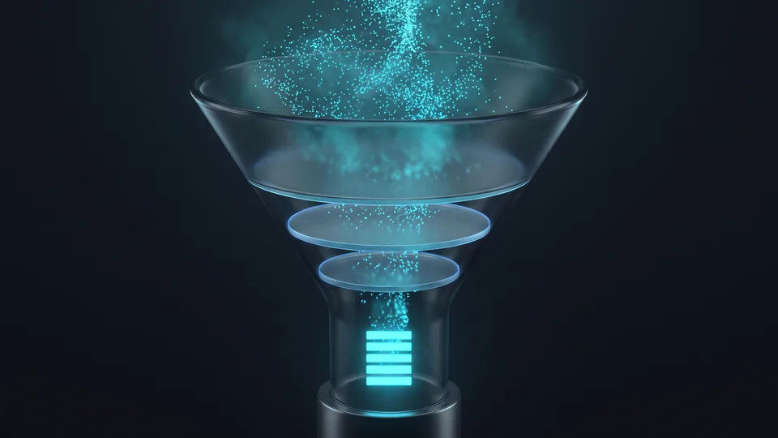

Arama Talebini Ölçmek Ne Anlama Gelir?
Anahtar kelime araştırması, bir konunun arama motorlarında hangi ifadelerle ve ne sıklıkta sorulduğunu ölçen çalışmadır. Ölçüm aylık aranma sayısını, rekabet yoğunluğunu ve sorgunun arkasındaki amacı birlikte okur. Tek başına hacim yanıltıcıdır. Bu veriler yan yana geldiğinde net bir yön çıkar. Ölçüm, içerik üretiminin ilk adımıdır.
Arama talebi, bir konuyu kaç kişinin hangi kelimeyle sorduğunu gösteren ölçülebilir bir sinyaldir. Sinyali okumayan site, kimsenin sormadığı sorulara cevap yazar. Siz "dermokozmetik set" dersiniz; müşteri "cilt bakım seti" yazar. İşte bu boşlukta durur kaybettiğiniz ziyaretçi. Anahtar kelime araştırması boşluğu ölçer ve kapatır.
Rekabet de her yıl sertleşiyor. Ticaret Bakanlığı'nın ETBİS 2025 raporuna göre e-ticaret yapan işletme sayısı 634.611'e ulaştı. Kelime seçimini şansa bırakan işletme bu kalabalıkta görünmez. SEO çalışmalarımızda bu yüzden ölçümle başlıyoruz her yeni projeye.
Kelimenin Ardındaki Talebi Kazanmak
Bir sayfa sıralandığında kelime kazanmazsınız; o kelimeyi yazan kişinin dikkatini kazanırsınız. "Klima" sorgusu ile "ofis için sessiz klima önerisi" sorgusu arasındaki fark, satın almaya kalan mesafedir. İlk sorgu merak taşır, ikincisi karar taşır.Hacim, Zorluk ve Niyet Üçgeni
Aylık aranma sayısı talebin büyüklüğünü, zorluk düzeyi rekabetin sertliğini, niyet ise sorgunun amacını gösterir. Verilerden biri eksik kalırsa karar sakatlanır. Yüksek hacimli ama amacı uyumsuz bir terim siteye trafik getirir, teklif getirmez. Peki amacı keskin, hacmi düşük bir terim ne yapar? Az ziyaretçi getirir; gelenlerin önemli bölümü teklif formuna kadar yürür.Arama Niyetini Nasıl Çözümleriz?
Niyeti, bir sorgu için sıralanan sayfaların ortak biçimine bakarak okuruz. Arama niyeti, kullanıcının bir sorguyu yazarken ulaşmak istediği sonucun türünü tanımlayan kavramdır. Google'ın ilk sayfada listelediği içerik türü, o sorgunun beklentisini açık eder. Yöntem gözleme dayanır; tahmin devreye girmez. Panel yerine ekranı okuyarak da bu sonuca ulaşırsınız.
Niyet çözümlemesi, kelime listesini işe yarar hâle getiren aşamadır. Aynı hacme sahip iki terim farklı amaç taşıdığı için farklı sayfalara gider. Bu aşamayı atlayan ekipler dönüşüm alamaz. Niyet katmanı olmadan yürütülen anahtar kelime araştırması yarım kalır.
Türkiye'de internet erişimi geniş bir tabana yayılmış durumda; TÜİK'in hanehalkı bilişim teknolojileri kullanım araştırmaları bu yaygınlığı düzenli olarak ölçüyor. Kullanıcı profili genişledikçe aynı hizmeti anlatan ifadeler de çeşitlenir. Kısa ve soru biçimli sorgular listenizde ayrı bir katman ister.
Dört Niyet Sınıfı
Bilgi niyeti öğrenmek ister, gezinme niyeti belirli bir markaya gider, ticari niyet seçenekleri karşılaştırır, işlem niyeti satın almaya hazırdır. Her sınıf farklı bir sayfa türü ister. Rehber yazısı bilgi niyetine, kategori sayfası ticari niyete, ürün sayfası işlem niyetine karşılık gelir.Sonuç Sayfası En Güvenilir Kanıttır
Bir sorgunun amacını anlamanın en kestirme yolu, o sorgunun sonuç sayfasını okumaktır. İlk on sonucun sekizi liste yazısıysa o sorgu rehber ister. Ürün arayan kullanıcıyı ise kategori sayfalarıyla dolu bir ekran ele verir. Ekranın kendisi zaten kanıttır; varsayıma gerek kalmaz.Niyet Uyuşmazlığının Erken İşareti
Sayfanız sıralanıyor, tıklama geliyor, oturum süresi ise saniyelerle ölçülüyorsa ortada bir uyuşmazlık vardır. Kullanıcı aradığını bulamamıştır. Aynı sinyali, geri dönen ziyaretçinin ikinci bir arama için sonuç sayfasına geri dönmesinde de görürsünüz. Böyle bir durumda sayfa türünü değiştirin; kelime yerinde kalabilir.Kelime Seçim Mekanizması: Havuzdan Önceliğe
Anahtar kelime araştırması, geniş bir aday havuzunu iş değerine göre sıralanmış kısa bir listeye indirir. Havuzu genişletiriz, niyete göre etiketleriz, alakasız terimleri ayıklarız ve kalanları önceliklendiririz. Süreci baştan sona yazılı bir kriter yönetir. Her adımın çıktısı bir sonrakinin girdisidir. Kısalan liste, dağılan kaynağı toplar.
Seçim geniş bir havuzla başlar, dar bir listeyle biter. Aradaki yol beş adımdan oluşur. Anahtar kelime araştırmasının kalbi de tam olarak bu elemedir.
- Tohum terimleri çıkarın: hizmet adlarınız, ürün kategorileriniz ve müşterinizden gelen sorular ilk havuzu kurar.
- Havuzu genişletin: her tohum terim için eş anlamlıları, yerel kullanımları ve soru kalıplarını ekleyin.
- Niyete göre etiketleyin: her sorguya bilgi, gezinme, ticari veya işlem etiketi verin.
- Ayıklayın: hizmet bölgenizle uyuşmayan ve alakası zayıf terimleri listeden çıkarın.
- Önceliklendirin: kalan terimleri iş değeri ve ulaşılabilir rekabet düzeyine göre sıralayın.
Bu mekanizmayı içerik stratejisi hizmetimizin ilk fazında uyguluyoruz. Mağaza tarafında kategori ve filtre sayfaları da aynı elemeye girer; e-ticaret SEO tarafında liste, kategori ağacıyla birlikte şekillenir. İçerik takviminiz bu dosyadan doğar.
Havuzu Genişletme Aşaması
Anahtar kelime araştırmasında havuz ne kadar genişse eleme o kadar isabetli olur. Bir üretici için "ofis koltuğu" tohumdan gelir; "bel destekli ofis koltuğu" ise gerçek talepten. Genişletme aşamasında hedefimiz çeşitliliktir; uzun ama tek renkli bir liste eleme masasında işe yaramaz.Eleme Filtreleri
Bir terimin listede kalabilmesi için hizmetinizle alakalı olması, ulaşılabilir bir rekabet düzeyinde durması ve karşılığında gerçek bir sayfa bulması gerekir. Karşılığı olmayan terim listede kalırsa boş bir sayfa doğurur. Ayıklama listeyi kısaltır; asıl kazanç, kaynağınızın dağılmadan tek yöne akmasıdır.Uzun Kuyruk Kelimeler Neden KOBİ'lere Yarar?
Rekabet seyrek olduğu için küçük siteler uzun kuyruk sorgularında çok daha hızlı sıralanır. Uzun kuyruk kelimeler, üç ya da daha fazla sözcükten oluşan, aranma sayısı düşük ama amacı belirgin sorgulardır. Kuyruk uzadıkça sorgu çeşidi artar; aynı talep daha çok ifadeye dağılır. Bu dağılım küçük siteye giriş kapısı açar.
Genel terimlerde ilk sayfa, yıllardır yatırım yapan büyük markalarla doludur. KOBİ için orada yarışmak uzun bir sabır sınavıdır. Uzun kuyruk ise henüz kalabalıklaşmamış bir alandır. "Vinç" sizi kalabalığa, "depo içi elektrikli vinç kiralama" doğru müşteriye götürür. Uzun kuyruk, anahtar kelime araştırmasında en verimli katmandır.
Pazarın büyüklüğünü kamu verisinden de izleyebilirsiniz; Ticaret Bakanlığı'nın e-ticaret görünümü duyurusu bir önceki yılın işletme sayısını paylaşıyor. Kalabalıklaşan bir pazarda anahtar kelime araştırması, ayrışmanın en ucuz yoludur.
Rekabet Seyrelir, Dönüşüm Yükselir
Sorgu uzadıkça kullanıcının kafasındaki resim netleşir. Beş sözcüklü bir sorgu yazan kişi ne istediğini bilir ve teklif formuna bir adım daha yakın durur. Peki genel bir terimden gelen ziyaretçi ne yapar? Çoğu zaman yalnızca gezinir ve sayfayı kapatır.Öbekleme ile Konu Otoritesi
Aynı amacı paylaşan sorguları tek sayfada toplama yöntemine öbekleme diyoruz. Yirmi ayrı sorgu için yirmi zayıf sayfa yerine üç güçlü sayfa kurarsınız. Kümeleme mantığı hem yamalı içerik yığınını önler hem de sayfalar arasındaki bağı sıkılaştırır. Konu otoritesi işte böyle birikir, sayfa sayfa.“2024 yılında 600 bin 800 olan e-ticaret yapan işletme sayısı, 2025'te 634 bin 611'e yükseldi.”
— Ticaret Bakanlığı, Türkiye'de E-Ticaretin Görünümü 2025
Anahtar Kelime Araştırmanızı Profesyonele Devredin
Araştırmayı devretmek, kontrolü bırakmak anlamına gelmez; ölçüm yükünü uzman bir ekibe aktarmak demektir. Anahtar kelime araştırması, veri okumayı sektör bilgisiyle aynı masada birleştiren bir uzmanlık işidir. Ekibiniz kendi işini bilir, biz ise arama verisini okumayı biliriz. İkisi buluştuğunda liste hem gerçekçi hem uygulanabilir olur.
Çoğu KOBİ'de pazarlama tek kişinin omzundadır; yüzlerce sorguyu etiketlemeye zaman kalmaz. Biz bu işi yapıya dönüştürüyoruz: havuzu kurar, etiketler ve öncelik listesini tek dosyada veririz.
Sonuç, süslü bir tablo yerine net bir haritadır. Kendi listenizi bizimkiyle karşılaştırmak isterseniz teklif formundan ulaşın. İlk değerlendirmeyi biz yaparız, kararı siz verirsiniz.
Bizimle Çalışınca Ne Değişir?
Anahtar kelime araştırması sonrası değişen ilk şey netliktir. Hangi sayfanın hangi sorgu için yazıldığını, hangi terimin neden elendiğini gerekçesiyle görürsünüz. Hız da artar; ekibiniz kelime tartışmasından çıkıp üretime döner. Liste ortak bir kritere dayandığı için tutarlılık kendiliğinden gelir.
Sezgiyle Kelime Seçimi ile Veriye Dayalı Seçimin Karşılaştırması
| Ölçüt | Sezgiyle Seçim | Veriye Dayalı Seçim |
|---|---|---|
| Başlangıç noktası | Ekip içi varsayım | Gerçek arama sorguları |
| Niyet eşleşmesi | Rastlantısal | Etiketli ve sınıflı |
| Rekabet değerlendirmesi | Yok | Zorluk ve sonuç sayfası okuması |
| Uzun kuyruk kapsamı | Dar | Geniş ve öbeklenmiş |
| Tipik risk | Yanlış sayfaya yanlış ziyaretçi | Kurulum emeği daha yüksek |
Kapsamınıza uygun yol haritasını birlikte çıkaralım; adımları ve zamanlamayı netleştirelim.
Kapsam çıkaralım Hizmet sayfasını görKelime listesi, içerik üretiminin pusulasıdır. Pusula yanlış kuzeyi gösterirse ne kadar hızlı yürüdüğünüz önemini yitirir. Talebi ölçün, amacı okuyun, elemeyi kriterle yapın. Bu üç adım sitenize gelen trafiğin niteliğini değiştirir.